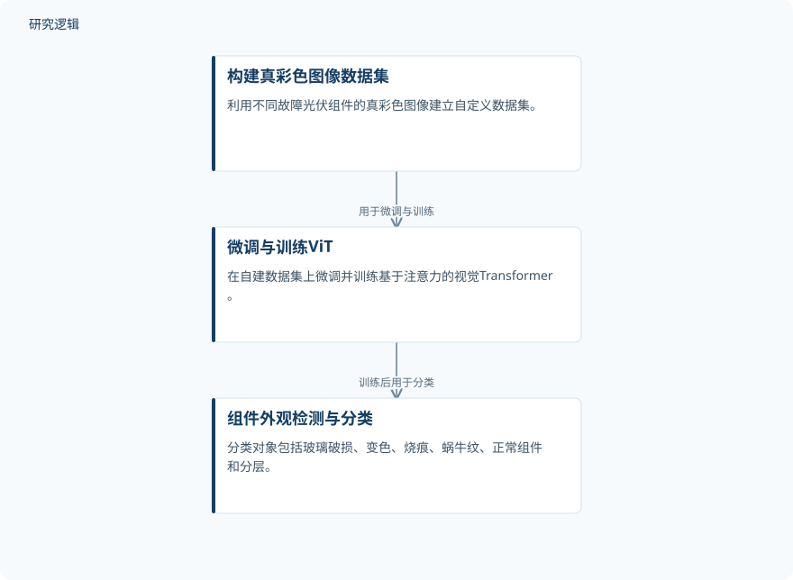

摘要解读
基于注意力深度学习网络的光伏组件智能故障检测
Intelligent fault detection in photovoltaic modules using attention-based deep learning network
解读更新 2026-10-18 21:27 · 依据公开摘要整理，未核验全文细节
光伏组件的外观异常能否通过图像自动识别？这项研究以真彩色图像和视觉Transformer开展故障分类，阅读重点不仅是分类准确率，也包括这一结果距离实际巡检应用还有哪些尚待确认的条件。
文章目录
从组件外观识别光伏运行异常
光伏系统在服役期间可能受到环境条件、人为错误和设备失效的影响，发生不同类型的故障。研究以保障发电和运行状态为背景，将任务聚焦于组件的视觉识别：区分玻璃破损、变色、烧痕、蜗牛纹、分层以及正常组件。这里，正常组件是分类对象之一，不应被理解为一种故障；研究关注的也是图像中可见的类别，而非摘要已证明能够覆盖的全部光伏故障。
用自建真彩色图像微调ViT
作者采用基于注意力的深度学习网络——视觉Transformer（ViT），自动识别光伏组件的外观类别。摘要明确描述的流程是：利用不同故障组件的真彩色图像建立自定义数据集，再在该数据集上对ViT进行微调和训练，得到用于故障检测与分类的模型。摘要没有展开网络配置、图像预处理或训练参数，因此不能据此补充更细的实现流程。
依据摘要整理的光伏组件分类流程


仅概括摘要明确描述的数据集构建、模型训练与分类环节，是依据摘要整理的示意图，并非论文原图。
下载 SVG图示关系说明
实线表示相邻阶段的信息流，虚线表示跨阶段联系或反馈。
构建真彩色图像数据集 → 微调与训练ViT：用于微调与训练；微调与训练ViT → 组件外观检测与分类：训练后用于分类
报告99.84%的分类准确率
摘要报告，训练后的ViT在光伏组件故障检测与分类中取得了99.84%的分类准确率，并将所得分类结果与文献中其他分类结果进行比较。不过，摘要没有列出具体比较对象及其评估条件。作者还提出，该模型有望集成到现有巡检系统，用于自主、实时、高效且稳健的状态监测；这属于潜在应用表述，不能直接等同于已经完成现场部署或验证了这些运行效果。
高准确率背后的验证范围仍待核对
仅凭本次摘要，无法判断数据集的样本规模、类别分布、图像采集环境，以及训练与测试数据如何划分；也无法判断各类别的识别表现、跨场景泛化能力和实时处理性能。文献比较是否采用相同数据与评价协议，同样需要进一步核对。这些信息在摘要中未报告，不代表论文没有开展相关工作，但限制了我们对准确率适用范围和实际运维价值的判断。
阅读启发：分清分类成绩与巡检能力
阅读启发：这项研究提供了一个将真彩色图像识别用于光伏组件状态监测的切入点。进一步阅读时，值得围绕两个问题核对证据：分类结果来自怎样的数据划分与比较条件？从图像分类走向现有巡检系统，摘要提出的实时性与稳健性获得了哪些验证？将模型分类成绩与系统应用能力分开理解，比仅凭单个准确率判断其运维成熟度更为审慎。
以上为本站阅读启发与建议，不是论文已验证的结论。